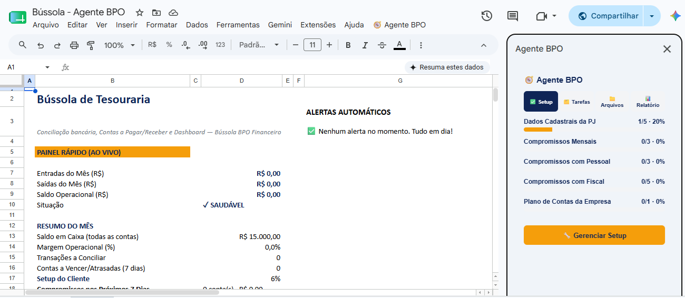
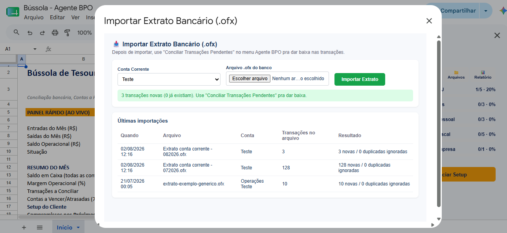
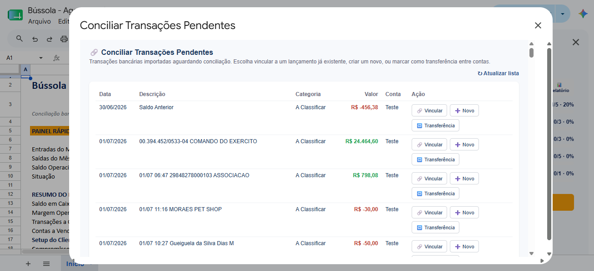

Antes de decidir, veja como funciona
Vídeo em breve
Player real (VTurb ou Panda Vídeo) entra aqui — ver comentário no código.
Vaga liberada — acesso imediato após a confirmação do pagamento.
Veja todos os detalhes abaixo ↓
Você já pensou em pedir demissão numa sexta-feira, só de raiva do seu chefe?
Cansado de trocar tempo com a família por um salário que não acompanha a inflação?
Já perdeu aniversário, formatura, fim de semana, porque "não podia faltar"?
E se, no fundo, você já soubesse que dá pra ganhar mais trabalhando de casa, no seu horário — só não sabe por onde começar?
Por que você ainda não migrou
Não sabe por onde começar — acha que precisa de um "plano perfeito" antes do primeiro passo
Acredita que precisa de curso caro de contabilidade pra prestar esse serviço
Não tem uma ferramenta profissional pra usar com o primeiro cliente — só planilha caseira ou nada
Medo de cobrar errado: ou cobra tão pouco que não compensa, ou passa vergonha cobrando mais
Não sabe como conseguir o primeiro cliente nem como se apresentar como profissional
É exatamente isso que o Agente BPO resolve — veja como:
Como funciona
Acesso imediato ao Agente BPO após a confirmação do pagamento.
Insira os dados do negócio que você vai atender.
A planilha concilia automaticamente o extrato bancário.
Conciliação, contas a pagar/receber e dashboard, sem esforço manual.
O que você recebe
Google Sheets + Apps Script. Conciliação bancária via OFX, Contas a Pagar/Receber, DRE simplificado e Dashboard — pra você operar de verdade com um cliente, sem precisar de sistema caro.
O passo a passo de como estruturar seu serviço, do primeiro cliente à precificação — sem enrolação teórica.
Passo a passo de como preencher e operar a planilha, com exemplo real, pra você aprender sem depender de suporte.
Guia Rápido, 3 Apresentações Profissionais Editáveis, Contrato de Prestação de Serviço Editável, Roteiros de Prospecção e Calculadora de Preço BPO — tudo incluso, sem custo extra.
A diferença
Pra quem é
Um sistema de gestão financeira profissional custa, em média, R$150 a R$300 por mês em mensalidade. Uma consultoria pra montar essa estrutura do zero custaria ainda mais.(comparação ilustrativa — não é preço de concorrente específico)
O Agente BPO: pagamento único de R$47, sem mensalidade.
Componente 1
Construída em Google Sheets com Apps Script — sem instalar nada. Você importa o extrato (OFX) do seu cliente e a planilha organiza:



Componente 2
O guia prático pra quem está começando: como conseguir o primeiro cliente, como se apresentar, como precificar seu serviço e como organizar sua rotina de trabalho remoto.
Agente BPO
Tudo isso, num pagamento único — sem a mensalidade de R$150 a R$300 de um sistema profissional.
R$47,00
à vista, pagamento único — sem mensalidade
Garantia de 7 dias. Se não fizer sentido pra você, o reembolso é integral e sem burocracia, conforme o Art. 49 do Código de Defesa do Consumidor.
Uma palavra antes de você decidir
Eu trabalho com contabilidade e finanças há mais de 25 anos. Comecei como contador, no serviço público — e ao longo do caminho migrei pra uma atuação mais de gestão: fazendo, na prática, o que hoje se chama de BPO Financeiro pros meus clientes.
Hoje tenho uma equipe que cuida de toda a parte operacional dos meus clientes de BPO, e dedico boa parte do meu tempo a ensinar essa profissão pra outras pessoas. Não como curso de mentoria caro, não como diploma — como um método organizado e acessível, que qualquer pessoa disposta consegue aprender e aplicar.
Isso é uma missão pra mim: mostrar que dá pra ter liberdade financeira, liberdade de tempo e liberdade geográfica sem gastar uma fortuna em sistema caro, em mensalidade ou em curso de mentoria. O Agente BPO nasceu exatamente disso — organização e método, sem enrolação.
— Fundador da Bússola BPO Financeiro
Quem constrói o Agente BPO
Contador de formação, migrado do serviço público pra uma atuação de gestão — hoje à frente de uma equipe que presta BPO Financeiro pra clientes reais, e dedicado a ensinar esse método pra quem quer trilhar o mesmo caminho.
Quero começar por R$47Perguntas frequentes
Não. O ebook "Como Ser BPO Financeiro" foi escrito pra quem está começando do zero — a planilha faz a parte técnica (conciliação, contas a pagar/receber, DRE), você aprende operando com um exemplo real.
Não. A planilha já vem com as fórmulas e automações prontas em Google Sheets com Apps Script — você preenche os dados e importa o extrato, o sistema faz o resto.
Isso depende do seu ritmo de prospecção — o ebook traz um roteiro de abordagem, mas não é uma promessa de resultado. O objetivo do material é te dar a ferramenta e o processo pra você operar com qualidade assim que fechar o primeiro cliente.
A planilha foi construída em Google Sheets com Apps Script, e é essa a versão com todos os recursos (importação de OFX, automações). Ela pode ser aberta em Excel, mas os scripts de automação não rodam fora do Google Sheets.
Você tem garantia de 7 dias — se não fizer sentido, é só pedir o reembolso, integral e sem burocracia.
Agente BPO — comece por R$47
Quero começar agora